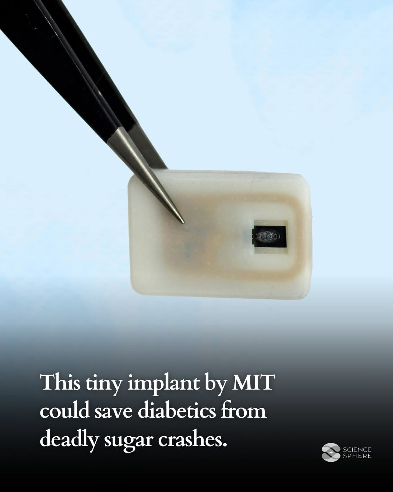

A groundbreaking new device from MIT may soon protect people with type 1 diabetes from life-threatening blood sugar crashes—completely automatically.
The coin-sized implant, placed just beneath the skin, contains powdered glucagon—a hormone that raises blood sugar. If a diabetic’s glucose levels fall dangerously low, the device can release the hormone in seconds, no need for injections. It can be activated wirelessly or linked to a continuous glucose monitor for fully automatic response.
Made with shape-memory alloys and advanced polymers, this tiny reservoir releases medication when triggered by a small burst of heat. The system has already shown promising results in diabetic mice, rapidly reversing hypoglycemia within 10 minutes. It could also be adapted to deliver emergency epinephrine for heart attacks or severe allergic reactions.
Designed to last for months—and potentially years—this tech could revolutionize emergency medicine and ease the constant fear many diabetics live with.
Follow Science Sphere for regular scientific updates
RESEARCH PAPER 📄
Siddharth R. Krishnan et al, "Emergency delivery of particulate drugs by active ejection using in vivo wireless devices.”, Nature Biomedical Engineering (July 2025)
